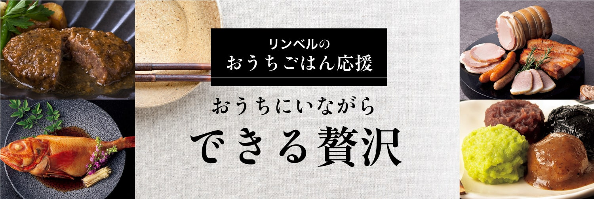
おでかけできない時こそ、食にこだわりを。
ご自宅で、手軽に、本物の味を楽しめる
「極みの逸品」を選りすぐりました。

- 博多辛子めんたいこ
- 3,240円（税込）〜
極寒のベーリング海で漁獲される、産卵前のすけとうだらの粒子感あふれる「真子」のみを使用し、さまざまな味わいに仕上げました。老舗酒蔵の大吟醸酒を使った「大吟醸仕込み」。生柚子が爽やかな「柚子仕込み」。京都の香辛料専門店がブレンドした「七味風味」。
どれも、ご飯が至福の一皿になる逸品です。
ここが「極み」
- 極寒のベーリング海で獲れる、産卵前のすけとうだらの粒子感あふれる「真子」のみを使用。
- 延宝元年創業、福岡最古の酒藏『大賀酒造』の清酒｢玉出泉｣を使用。
- 調味液に、羅臼昆布、辛さの異なる２種類の唐辛子、粗挽き唐辛子をブレンド。
- 柚子風味の柚子は福岡県朝倉郡東峰村の香り高いものを使用。
- 七味風味は京都の香辛料専門店がブレンドした七味唐辛子をふんだんに使用。

-

日本の極み 博多辛子めんたいこ
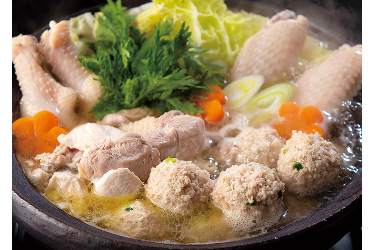
- 宮崎地鶏鍋セット
- 8,640円（税込）〜
江戸時代からもてはやされた原種鶏をルーツとする「みやざき地頭鶏」は、宮崎県が誇るブランド鶏。厳しい審査を経た指定農場だけがその生産を許されます。1㎡につき2羽以下という飼育条件の中、抗生物質などを与えずヒナから一貫して飼育している『石坂村牧場』の地頭鶏を100% 使用。鶏ガラで贅沢に出汁をとった自家製スープに、味付きのつくねを加えれば、よりコクのある味わいが楽しめます。肉の旨みと独特の食感をご賞味ください。
-
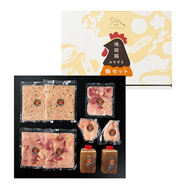
日本の極み 宮崎地鶏鍋セット
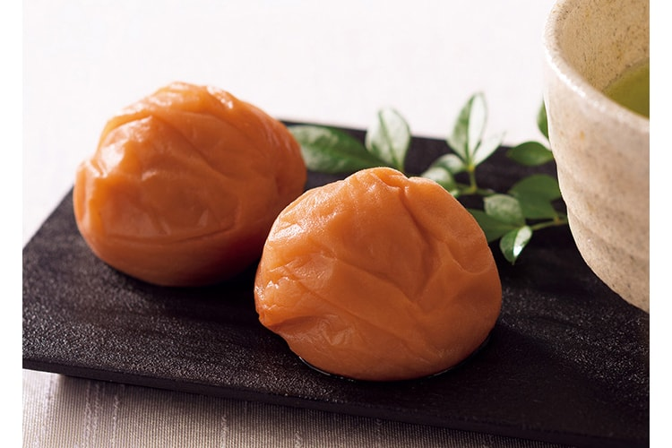
- うめみつぼし
- 3,240円（税込）〜
疲労回復、血液の浄化などに役立つクエン酸が豊富で、古くは漢方薬、現在は健康食品として愛される梅干。その酸味をまろやかに、塩分をわずか3％に抑えて、より健康的にしたのが「うめみつぼし」です。大粒の果実で種は小さく皮が薄い、和歌山県の紀州南高梅を使い、国産はちみつでまろやかに仕上げました。やわらかい果肉に梅そのものの味わいと、はちみつの甘みを含んだ大ぶりな梅。ひとつひとつていねいに包んでお届けします。
-
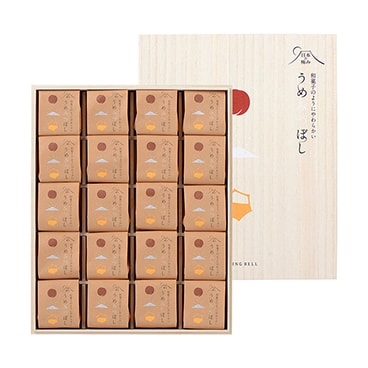
日本の極み うめみつぼし
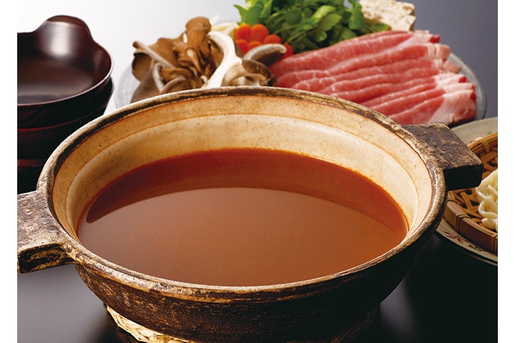
- 薬膳だし
- 2,160円（税込）〜
お鍋に、うどんやそばに、煮物のだし汁にと、いろいろなお料理に使える濃縮だし。酸・苦・甘・辛・塩の五味を大切にしただしは、身体にやさしくしみわたる味わい。鍋料理の具材に深くしみ込んで、おいしさをいっそう引き立てます。
-
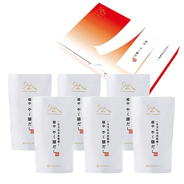
日本の極み 薬膳だし
- 米沢牛やわらかハンバーグ
- 3,240円（税込）〜
人気のブランド和牛、米沢牛をたっぷり使ったハンバーグ。脂の融点が低い霜降り肉を使ったハンバーグは、ご自宅で焼くのが難しいものですが、こちらは湯煎で10分加熱するだけ。特製ソースもセットで、本格ハンバーグを手軽にお楽しみいただけます。
ここが「極み」
- 米沢牛だけを100%使用
- 椎茸、酒粕などを加えた奥深い味
- 旨みを凝縮した和風味

-
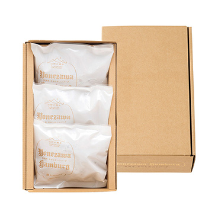
米沢牛やわらかハンバーグ
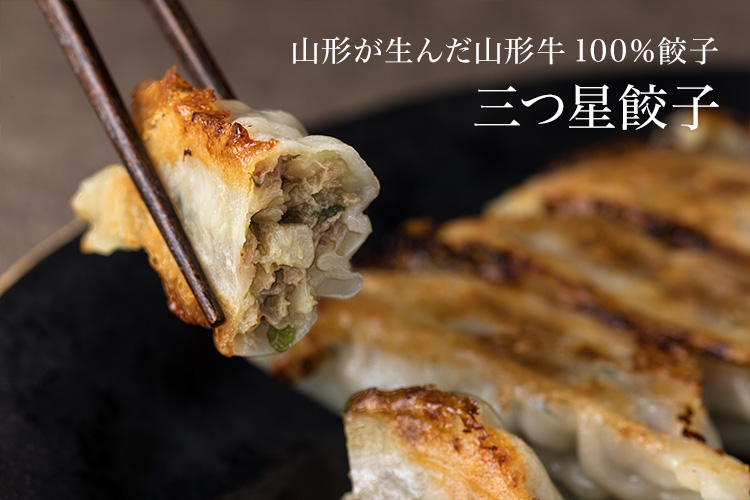
- 三ツ星餃子
- 2,160円（税込）〜
山形牛の良質な赤身肉（モモ肉・ウデ肉）と焦がした牛脂、たっぷりの国産野菜を使った贅沢な餃子。加熱すると透明感を増す薄めの皮は、焼面はパリッとしながら、もっちり感も残した、ふたつの違う食感が楽しめます。
冷凍でお届けするので、お手軽に絶品の味をお楽しみいただけます。
ここが「極み」
- 100％山形牛
- 国産野菜だけを使用
- パリパリ感ともっちり感のある薄めの皮

-
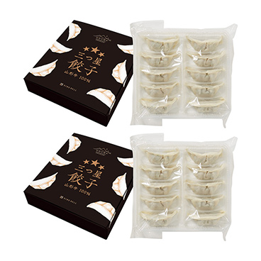
山形の極み 三ツ星餃子
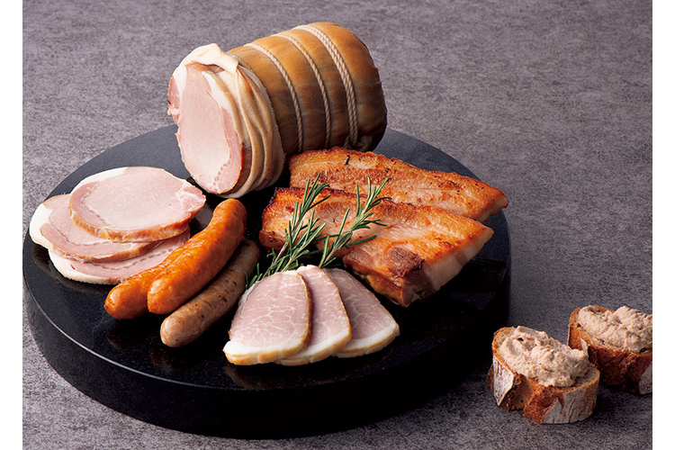
- 山形県 無塩せきハム・ソーセージセット
- 4,320円（税込）〜
「塩せき」とは肉に塩や発色剤（亜硝酸Na、硝酸K）を加える製法で、広くハム類の製造に使われるもの。発色作用の他に、殺菌や防腐を目的ともしています。これを使わない「無塩せき」にこだわり、かつ安心で安全を実現したことで、「本物」の味を実感できるセットができました。
そのままでも、お料理の材料にも。ぜひ様々な形でお楽しみください
ここが「極み」
- 99％、消費者の立場を自覚して製造
- 第三群の食品添加物（着色料、保存料、発色料、増粘多糖類など）を使わない。
- 庄内豚肉、月山産山ぶどうワインなどの厳選素材を使用
-
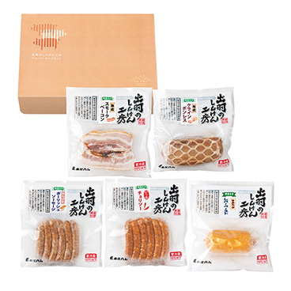
山形の極み 山形県 無塩せきハム・ソーセージセット
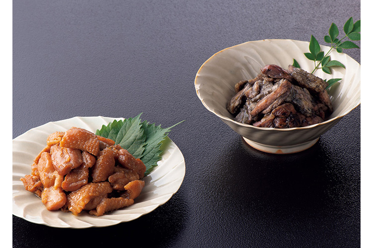
- 宮崎県 みやざき地頭鶏焼き鳥セット
- 2,160円（税込）〜
江戸時代には島津藩の地頭職に献上されていた「地頭鶏」。それを原種とする「みやざき地頭鶏」は、日本三大地鶏のひとつともいわれます。この「みやざき地頭鶏」を、化学調味料や保存料を使わず、熟練の技で焼きあげました。
岩塩のみでシンプルに焼きあげた焼き鳥と、独自の味噌ダレに漬け込んだ味噌焼き。どちらもそのままお楽しみいただけます。
ここが「極み」
- 〈炭火焼き鳥〉
- 岩塩のみを使用して熟練の技で焼き上げた化学調味料・保存料無添加の炭火焼。
- 〈味噌焼き鳥〉
- モモ肉と希少な内臓部位を使用したコク深い味わい。
-
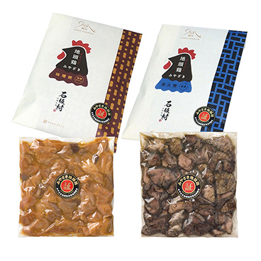
日本の極み 宮崎県 みやざき地頭鶏焼き鳥セット
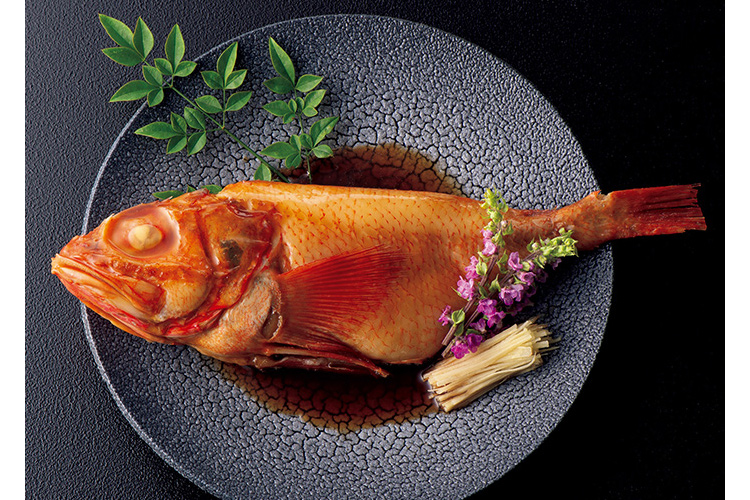
- 北海道 キンキの煮付け
- 5,400円（税込）〜
北の冷たい海で捕獲された、身にも皮にも脂ののったキンキを、北海道でなじみの醤油ベースをさらに濃厚にしたタレで煮付けにしました。やわらかな白身にたっぷり脂を蓄えたキンキとタレが絡みあって、口の中でとろけるような味わい。
レンジで簡単に調理ができ、本格的な煮付けが手間なく楽しめます。
ここが「極み」
- ロシアで獲れた鮮度の高いキンキを、濃厚な醤油ベースのタレで煮付けた贅沢な逸品。
-
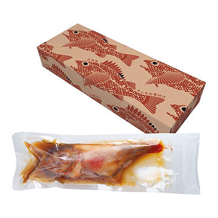
日本の極み 北海道 キンキの煮付け
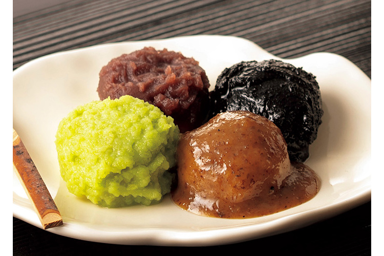
- おばあちゃん家のお餅セット
- 3,240円（税込）
山形や宮城で古くから家庭料理として伝えられてきた、やさしい甘さのスウィーツをお届けします。お餅には、もっちりとコシのある山形県産もち米「ひめのもち」を使用。米の色が白く、杵で搗いて餅にすると一層白さが引き立ちます。
こだわりの素材を使い、昔ながらの製法で作りあげた、みちのくの郷土の味をご賞味ください。
ここが「極み」
- 〈じんだん餅〉
- 旬の尾花沢産「天平秘伝豆」をふんだんに使用した、濃厚な味わい。
- 〈くるみ餅〉
- 貴重な山形県産の風味豊かな鬼ぐるみのみを使用した餡を使用。
- 〈ごま餅〉
- しっとりとした食感とごまの風味が香ばしい味わい。
- 〈あんこ餅〉
- 甘さを控えた上品なつぶあんを使用。
-
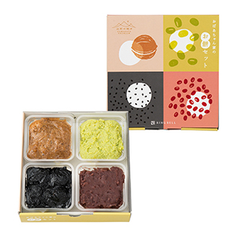
山形の極み 山形県 おばあちゃん家のお餅セット
料理研究家やグルメライターも絶賛！
特筆すべきはプチプチ感。
舌の上ではっきりと卵の粒が感じられる食感です。
フードライター 猫田しげるさん
詳しくはこちら